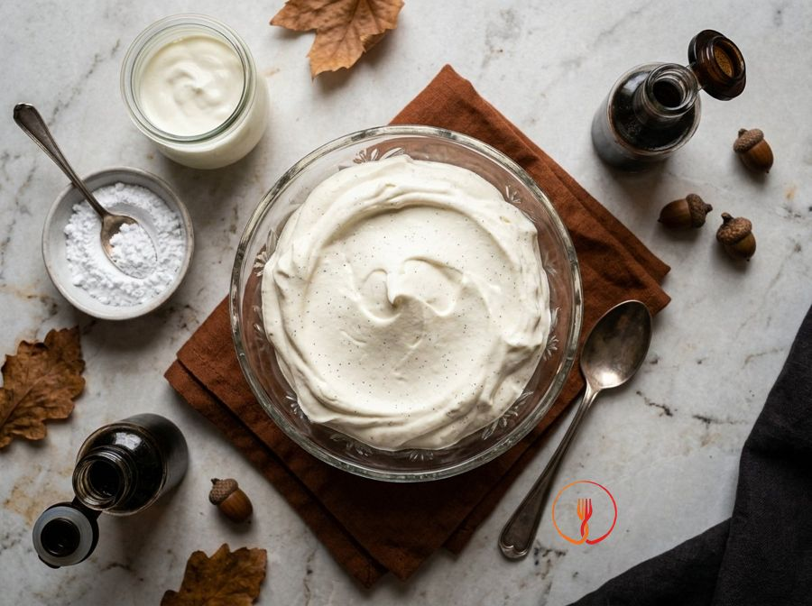

Crema Chantilly
Ingredienti
- panna fresca da montare (almeno 35% di grassi)500 ml
- zucchero a velo60 gr
- estratto di vaniglia1 cucchiaino
Allergeni
Latte
Può contenere tracce di: Glutine.
Procedimento
- Metti la panna in frigorifero per almeno 4 ore prima della preparazione. Anche la ciotola e le fruste dovrebbero essere ben fredde.
- Versa la panna fredda nella ciotola e inizia a montarla a velocità medio-bassa.
- Quando la panna comincia ad acquistare volume, aggiungi gradualmente lo zucchero a velo setacciato.
- Incorpora i semi della vaniglia o l'estratto, continuando a montare.
- Aumenta leggermente la velocità e lavora fino a ottenere una consistenza soffice e stabile, con picchi morbidi o medi secondo l'utilizzo.
- Ferma le fruste non appena la panna mantiene la forma: continuare a montare potrebbe trasformarla in burro.
- Trasferisci in una sac à poche oppure in un contenitore coperto.
- Conserva in frigorifero e utilizza preferibilmente entro poche ore per ottenere la migliore consistenza.
Consigli dello chef
Consigli, errori e alternative:
- In pasticceria italiana il termine crema chantilly viene spesso usato anche per la crema diplomatica, preparata unendo crema pasticciera e panna montata.
Questa ricetta è invece la chantilly classica.
- Non utilizzare panna a temperatura ambiente.
- Per una chantilly più stabile puoi utilizzare un prodotto stabilizzante specifico per panna.
- Puoi aromatizzare con scorza d'arancia o cannella.
- Non congelare la preparazione se vuoi mantenere la sua consistenza originale.
Valori nutrizionali (stima)
| Per porzione (283 g) | Per 100 g | |
|---|---|---|
| Energia | 4125 kJ / 986 kcal | 1460 kJ / 349 kcal |
| Proteine | 5.8 g | 2.0 g |
| Carboidrati | 37 g | 13 g |
| di cui zuccheri | 37 g | 13 g |
| Grassi | 88 g | 31 g |
| di cui saturi | 55 g | 20 g |
| Fibre | 0.0 g | 0.0 g |
| Sale | 0.2 g | 0.1 g |
Valori stimati con l'AI su dati medi CREA / USDA: sono indicativi e non sostituiscono il parere di un medico o di un nutrizionista.
Apri la ricetta nell'app per la lista della spesa, le schede ingredienti e i negozi vicini.